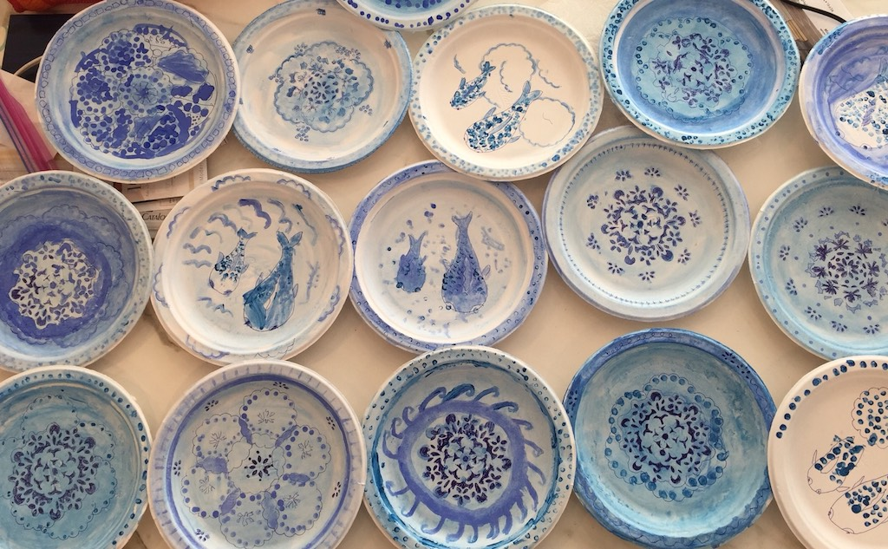
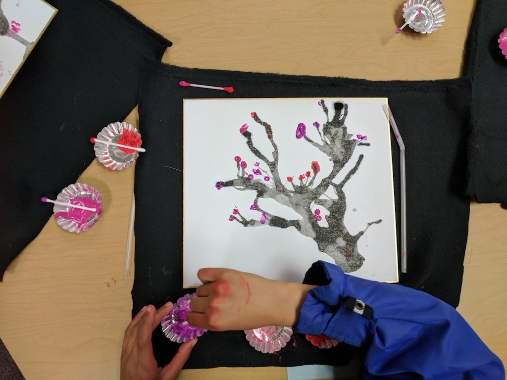
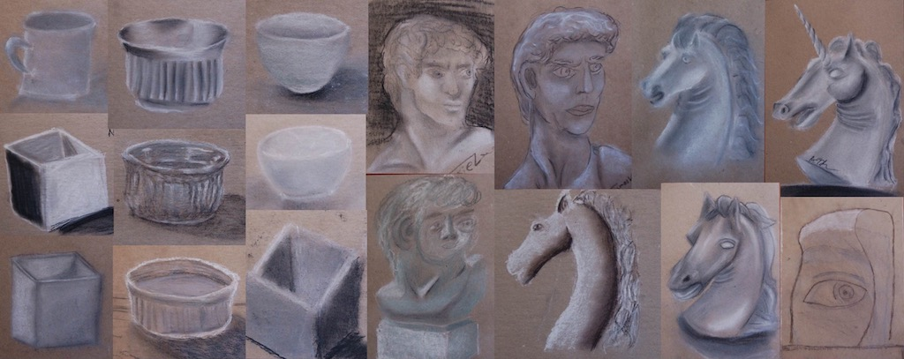
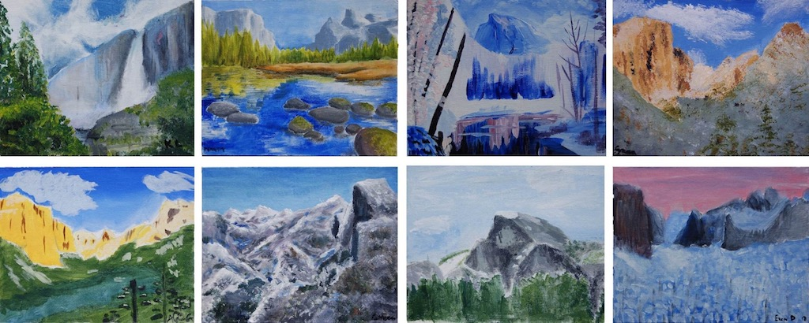
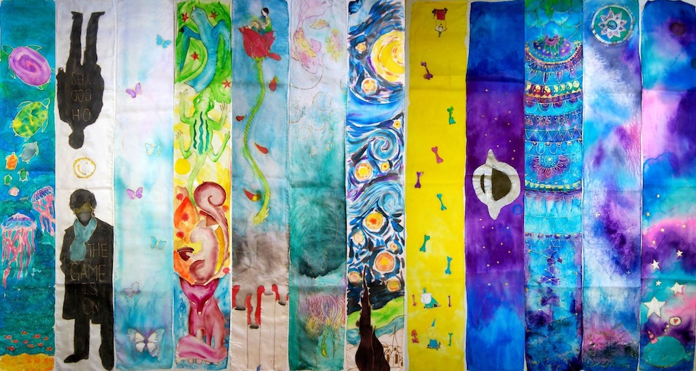

2017-2018 CLIP Art Gallery
CLIP Art is a language and cultural enrichment class funded by parents’ direct donations to CLIPCO. This unique class was formed in 2000 by parents Chwen Lim and Karen Tseng as a way to introduce Chinese art that connects with other aspects of their CLIP education.
CLIP Art is taught once a month; each class is 1½ hours long for K to 5th grade, and 2 hours long for 6th to 8th grade classes. The class structure is comprised of an introduction, discussion, demonstration, application and debriefing. Mandarin is spoken throughout the entire class. The monthly subject is designed to correlate with students’ curriculum, such as language arts, geography, science, history, and social studies.
In the past, CLIP Art pieces have been exhibited in the Cupertino Union School District office and in the Martin Luther King Jr. Library in San Jose. Several students’ works were also selected for the Santa Clara County Office of Education’s permanent art collection. Here is a sample of CLIP Art projects from the past few years:
Kindergarten CLIP Art teacher: Kathleen Ko
Blue and White Porcelain (November)
In class, we learned about the history of porcelain/china as well as the process of producing such fine art. During the hands-on craft time, the students had fun designing their porcelain (paper) plates with tools such as stencils, baking cups, Q-tips, ball-point pens
Cherry Blossom Painting (March)
In class, we learned about seasonal blossoms and how to identify cherry blossom vs peach or plum blossom. The students used drinking straws and ink to blow shapes of branches, and used q-tips for blossom stamping.
1st Grade CLIP Art teacher: Grace Liu
Piggy Bank（April)

This is one of 1st Grade kids favorite project. They collect recycle materials, like bottles, spoons, and corks. Kids create their own ideas and make different cute and colorful piggy banks. In the class, kids not just learn how to make piggy banks, we also teach them how to protect our environment. Now people use millions of water bottles per day, so if we can reuse and reduce these recycled materials, our world will be more beautiful and different!
Chinese opera（March)

In the five thousand years of Chinese history, Chinese opera has had an important place. Before the class, kids will maybe be afraid or confused of these Opera faces, but in the class ,we will let them make Chinese opera masks, tell them opera history, and show them different face color meaning⋯After the class, it’s great to see their smiles and enjoy their puppet show.
2nd Grade CLIP Art teacher: Phoebe Yang


Around Chinese New Year time, our 2nd-grade students learned when and how Lion Dance became popular in Chinese culture. Students painted on paper plates to demonstrate the characteristics they usually saw on the lion’s face for Lion Dance, and attached pipe cleaners, tissue paper, and feathers around the face to be lion’s mane.
Chinese opera（March)


2nd-grade students also learned about the stories behind some famous dishes in JiangSu(江蘇) and ZhiJiang(浙江) area in China. Students mixed food colors with modeling material and shaped it to Shai Mai (燒賣), Beggar's Chicken(叫化雞), BBQ Ham in Honey(蜜汁火腿), Drunken Chicken(醉雞)...etc. In addition, they also decorated their “dishes” with extra acrylic paint to match to the realistic look.
3rd Grade CLIP Art teacher: Helen Lin

The different art designs which are inspired by rocks were introduced to the third grade students. They learned the Chinese classic novels, "The Dream of The Red Chamber" and "The Journey To the West" , which are related to the stone. They enjoyed the creative process of painting ordinary stone into art work.
4th Grade CLIP Art teacher: Chwen Lim


From creating our thematic “Chess set with seeds” to reproducing “folklore art pieces”, from knowing about “tea culture” to studying the different styles of “Chinese painting”, We teamed up to produce our very own “Scroll of life in Meyerholz”. We got to sew our own “sock doll”, customised our “Beijing cuisine banquet” mini fridge art with paper clay. We really have fun integrating art and culture into the learning of Chinese language. One of our folk art pieces was being selected as a permanent exhibit at Santa Clara County of Education.
5th Grade CLIP Art teacher: Chwen Lim

Starting with the “shadow puppet theatre: showing “Three little pigs”, we traveled with Zhang He when he went on “boat trips” to Nanyang, we made mini fridge art as we learned about “Cantonese cuisine”, We created our mini sculptures of “Historical figures” when we sang “The eve of History Exam”, we were thrilled to create our own portrait with “Printmaking” and completed the journey of our CLIP arts lesson with dips and dabs of ink as we were introduced to the beauty of Calligraphy.
6th Grade CLIP Art teacher: Helen Lin
The students admired the Chinese ritual bronze vessel pictures and learned Chinese myth about the Chinese fiend, "Tao Tie". They were also introduced the fiends images of the different worldwide cultures, like Medusa of Greek myth, Kala in south-east Asia, the face of African indigenous and Maori. They created their shield with the fiend just like Athena's shield with the Medusa on it, inspired the myths.
7th Grade CLIP Art teacher: Chia-Ying Cho
March

We did Japanese Ink Printing and made a screen with four different prints by borrowing three other classmates’ prints. Though it’s a lot of work, students had fun coloring the background and making prints! Here you can see the many faces of Horyuji temple.
May
We introduced some stories and artworks of two famous Renaissance artists - Da Vinci and Michelangelo. Then we practiced sketching by using black and white oil pastels. We observed the light and the shadow of the sculpture/objects and tried to make the sketching three-dimensional.
8th Grade CLIP Art teacher: Chia-Ying Cho
March
We painted different views of Yosemite on the canvas by using acrylic paint. Some students’ paintings are amazingly beautiful!
April and May
We introduced the Art Nouveau and spent two months making the beautiful silk scarves! Students are really creative and they did a great job making their scarves!